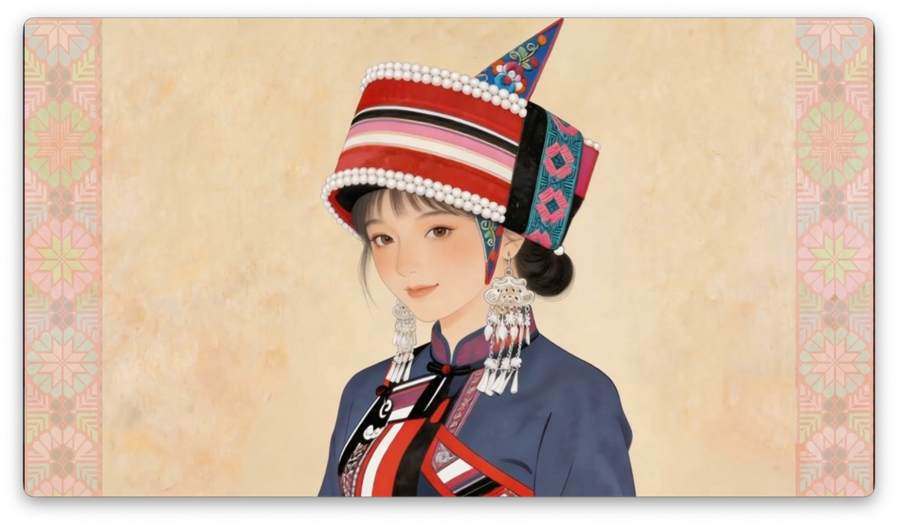
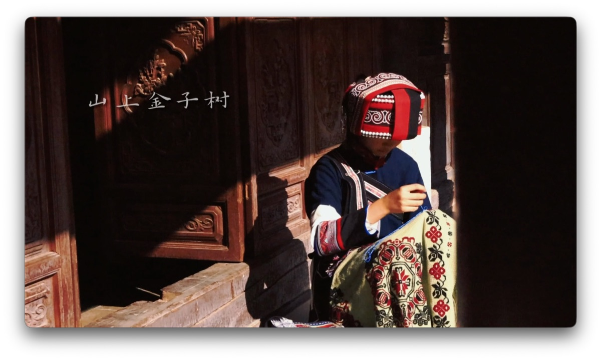
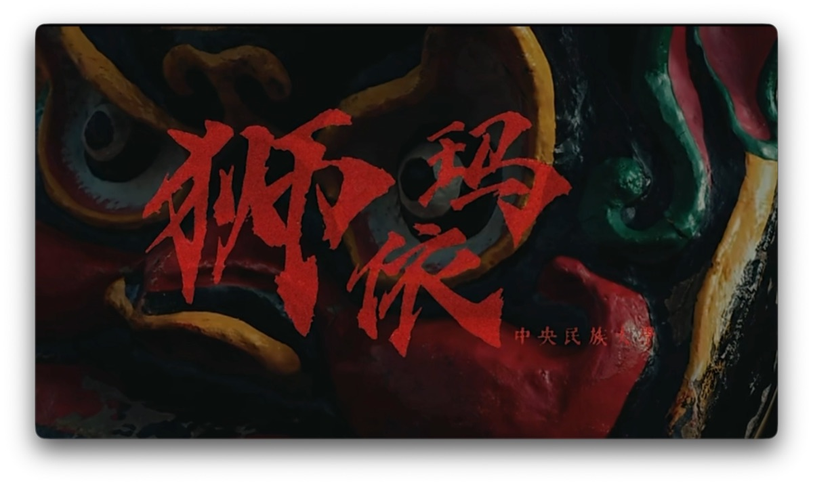
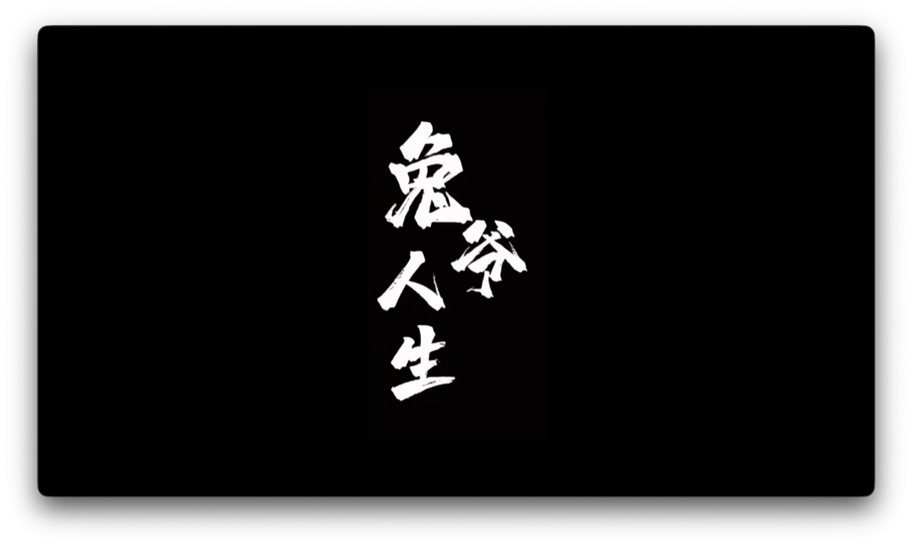
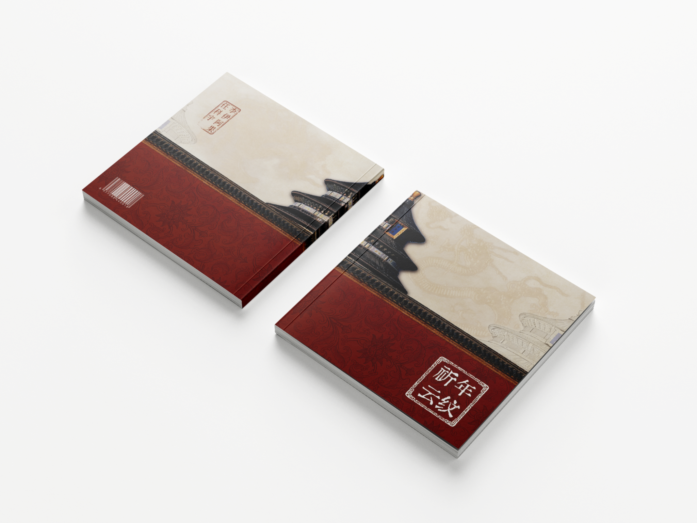
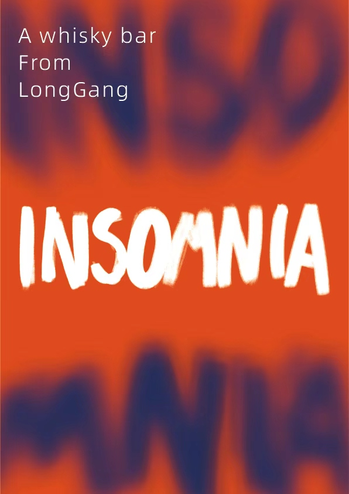
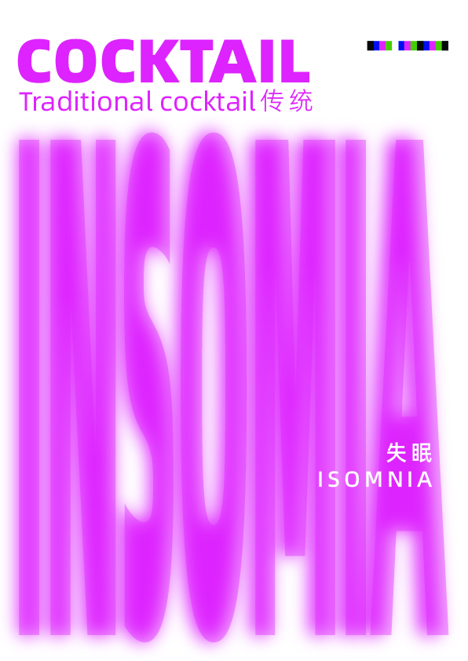
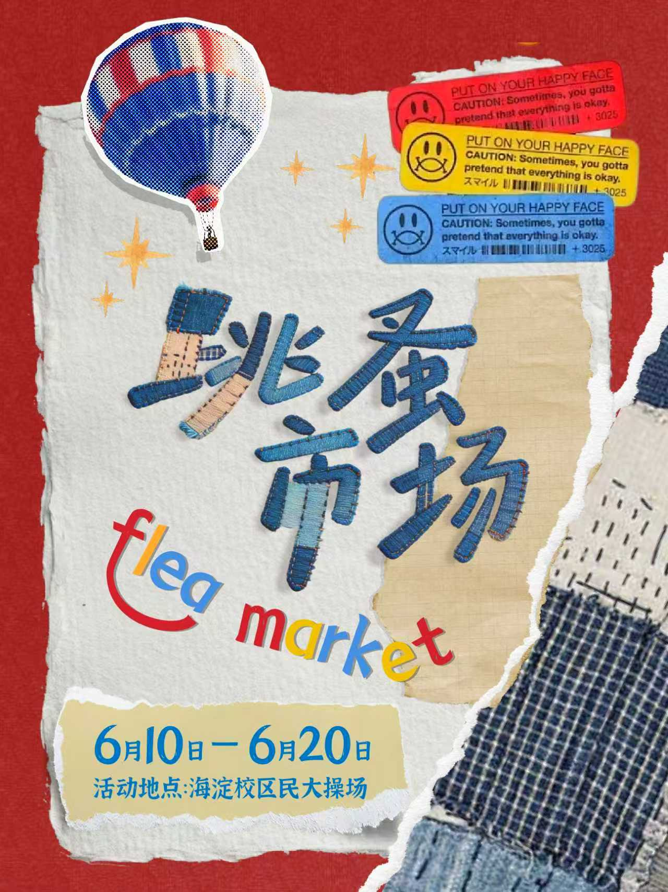
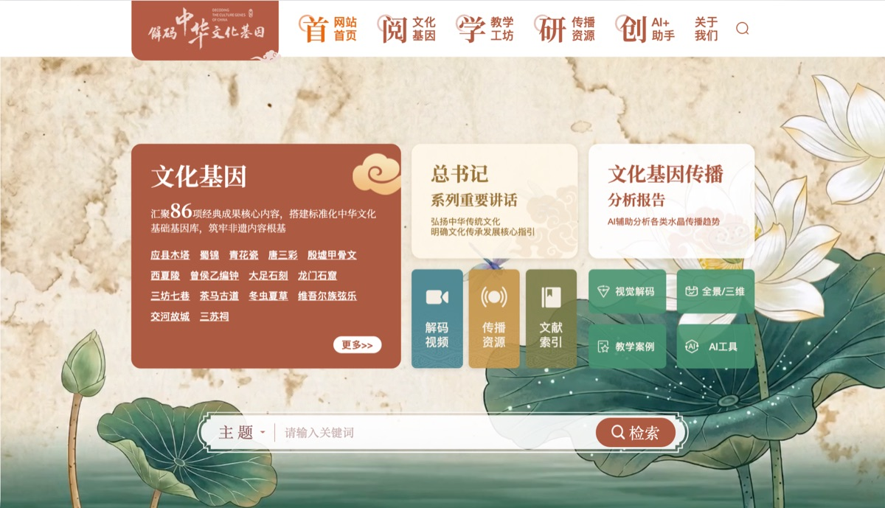
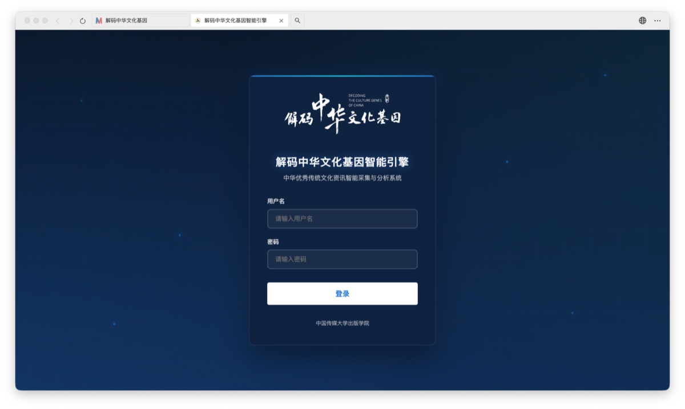

▶
AIGC SHORT FILM / 01《阿诗玛的花》｜AIGC短片
基于纪录片《阿妈的刺绣》延伸创作，以AIGC动画解构撒尼刺绣的几何对称特征。在传统纹样与数字技术的碰撞中，探索非遗文化的当代表达。
嗨！我是阿果☺️一起用影像、设计和 AI 工作流，探索内容的新表达💗
点击面板查看视频小片🎬

基于纪录片《阿妈的刺绣》延伸创作，以AIGC动画解构撒尼刺绣的几何对称特征。在传统纹样与数字技术的碰撞中，探索非遗文化的当代表达。

以第一人称视角走进撒尼人的生活现场，记录国家级非遗传承人的坚守与传递。当针脚穿过布面，古老的文化也在当代继续生长。

以舞狮为视觉意象，通过舞蹈影像探讨生命、传承与信仰。在刚劲与热烈的肢体表达中，展现民族文化历久弥新的生命力。

镜头走进杨梅竹斜街，从一尊兔儿爷的诞生开始，回望传统技艺跨越时光的传承轨迹。在“十五五”开局之年，以非遗之美回应文化自信的时代命题。
《祈年云纹》以北京天坛祈年殿建筑纹样为研究对象，围绕藻井、雕梁画栋与龙井柱三大纹样系统，整理其纹样装饰与文化象征内涵。作品以“云纹”为精神线索，串联天、地、人之间的礼制秩序与宇宙观念。


Typography / Brand Poster

Visual Experiment / Type Design

Event Poster / Collage Design
《解码中华文化基因》是从2022年开展至今的传统文化IP型项目，以全媒体矩阵开展中华优秀传统文化系列报道。
借以AIGC创作系列短视频，并创建「中华文化基因数据库」网页，呈现“内容平台 + AI知识服务系统”的产品结构。

基于已上线的86个短视频进行「文化基因解码」，沉淀文化基因内容资产，为文化传播、教学资源和知识检索提供平台入口。

基于 Vibe Coding 工作流搭建文化领域智能知识库，汇聚新闻资讯、学术论文、非遗资料及行业案例，并探索 Agent 在文化研究、文创设计、文旅服务中的应用。
我喜欢把想法变成作品✨
无论是影像、出版物、数字产品还是 AIGC 内容，本质上都在回答同一个问题——如何让一个想法被更有效地表达和理解
技术不断变化，但创造力、审美和讲故事的能力始终重要